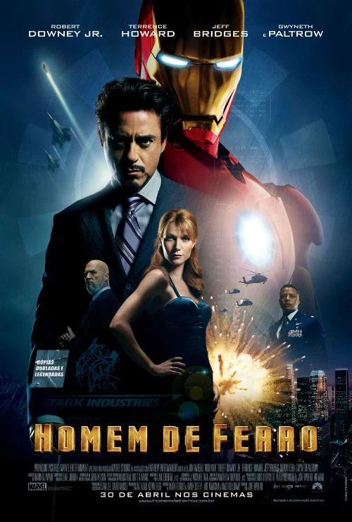
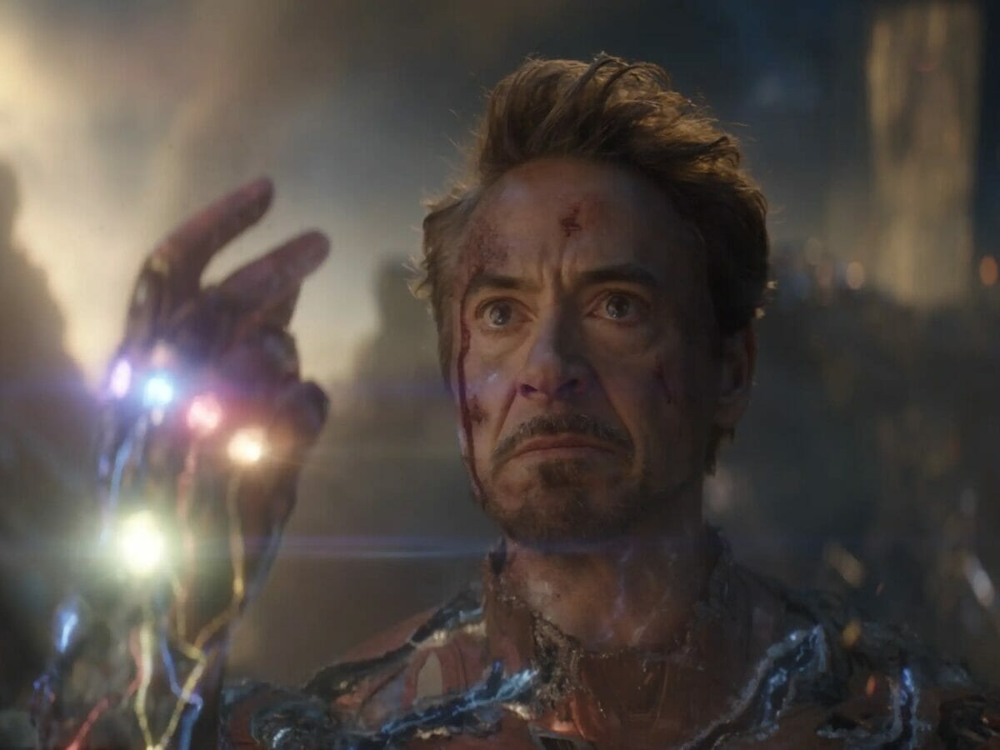

Os Principais Filmes do Homem de Ferro

Homem de Ferro (2008)

O início de tudo. Tony Stark constrói sua primeira armadura em uma caverna para salvar sua vida e decide usar sua tecnologia para proteger o mundo.

Homem de Ferro 2 (2010)

Agora conhecido publicamente como Homem de Ferro, Tony enfrenta problemas de saúde causados pelo reator em seu peito e precisa lidar com o vilão Ivan Vanko, que busca vingança contra sua família. O filme também apresenta Natasha Romanoff e amplia a ligação com os futuros Vingadores.

Vingadores: Era de Ultron (2015)

Buscando criar uma inteligência artificial para proteger a Terra, Tony acaba criando Ultron, uma ameaça robótica que planeja extinguir a humanidade.

Vingadores: Ultimato (2019)

O desfecho épico. Tony Stark decodifica a viagem no tempo, constrói a Nano Manopla e faz o sacrifício final para salvar todo o universo.